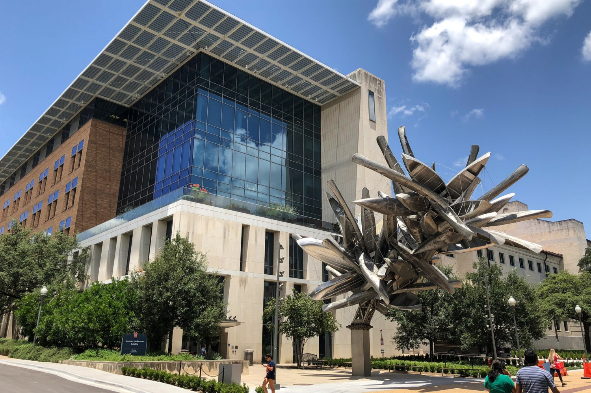
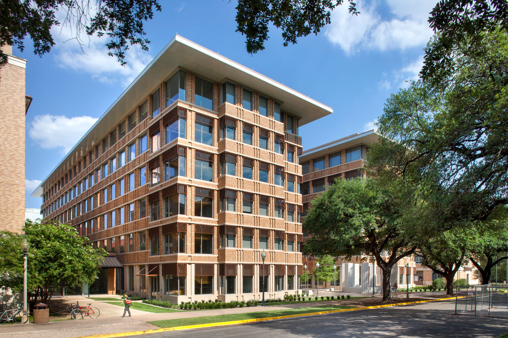

About CTCN
CTCN is a multidisciplinary, collaborative center dedicated to understanding how the brain computes. Faculty members contribute expertise from the fields of Neuroscience, Mathematics, Computer Science, Psychology, Physics, and Engineering. The University of Texas at Austin has excellent programs in Computer science, Engineering, Pure and Applied Mathematics, Physics and the Biological Sciences. CTCN members enjoy collaborative interactions with members from several of these departments.To subscribe to the CTCN mailing list, e-mail ctcn@utlists.utexas.edu with your name/affiliation/department, and with the subject Subscribe.
The Seay psychology building (left), Norman Hackerman building (center) and Gates-Dell complex (right) house much of CTCN:


Join us
We welcome prospective graduate students and postdoctoral scholars, who can choose to be individually or jointly mentored by faculty members across departments, for a unique training experience that straddles disciplinary boundaries.CTCN is not itself a degree-granting institution. Graduate students interested in joining the center must first gain admission into an MS/PhD program (in the departments of Mathematics, Computer Science, Physics, Electrical and Computer Engineering, Neuroscience, or Psychology) at the University of Texas at Austin. You are free to contact relevant center faculty members to notify us of your interest and let us know that you are applying to one of these graduate programs.
CTCN invites applications for postdoctoral research positions in collaboration with a network of experimentalists from UT Austin, as well as national and international collaborators. Candidates with a PhD in a relevant field are encouraged to apply.
UT Austin is an equal opportunity employer and promotes academic strength through diversity. We are sensitive to the needs of dual-academic and dual-career families.
Inquiries may be addressed to Thibaud Taillefumier at thibaud@utexas.edu.